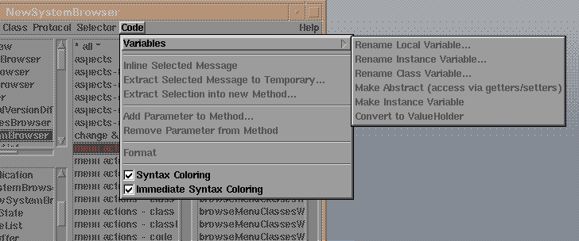
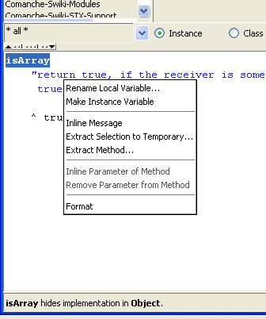

![[prev]](../../../icons/DocsLeftArrow.gif)
![[up]](../../../icons/DocsUpArrow.gif)
![[next]](../../../icons/DocsRightArrow.gif) This menu provides code-rewriting and formatting functions.
Some of its functions are also reachable via the codeView's
shifted-middle-button menu (i.e. press "SHIFT" while clicking the menu button).
This menu provides code-rewriting and formatting functions.
Some of its functions are also reachable via the codeView's
shifted-middle-button menu (i.e. press "SHIFT" while clicking the menu button).

[code menu; the image may be outdated]

[codeView's code menu (SHIFT-menu)]
-
- Rename Local Variable
- Change the name of the selected variable (i.e. must be a local variable or argument).
The source of the current method is rewritten as required and an implicit accept is performed
(i.e. the changed code is installed).
(see "Refactorings" for details).
- Make Abstract
- Make the selected variable abstract.
All direct references to the selected variable are changed into message sends to corresponding
getter-/setter- methods, and getter-/setter-methods are added (if not already present).
This will also change methods in all subclasses, which refer to the variable in question.
(see "Refactorings" for details).
- Make Instance Variable
- Change a local to an instance variable
Changes the selected local variable into an instance variable.
A check is performed, if a local by that name does not exist in other methods.
(see "Refactorings" for details).
- Convert to ValueHolder
- Change an instance variable to a valueHolder.
All direct references to the variable are rewritten into #value/#value: message sends,
and a ValueHolder creation method is added if not already present.
This will also change methods in all subclasses, which refer to the variable in question.
(see "Refactorings" for details).
- Inline Selected Message
- The message which is selected in the codeView is inlined.
This only works if there is exactly one possible method to be inlined.
(see "Refactorings" for details).
- Extract Selected Message to Temporary
- The message which is selected in the codeView is assigned to a temporary within the method.
(see "Refactorings" for details).
- Extract Method
- Extract the selected code and place it into a separate method
(see "Refactorings" for details).
- Extract Method to Component
- Extract the selected code and place it into a separate method in another component.
(see "Refactorings" for details).
- Add Parameter to Method...
- Adds an additional argument to the selected method.
This also asks for a new default value for the argument, and rewrites all methods which send
this message to send the new message with the default value for the additional parameter.
(see "Refactorings" for details).
- Remove Parameter from Method
- Removes an argument from the selected method.
The argument must be selected in the codeView.
This function rewrites all methods which send
this message to send the new message without the removed parameter.
(see "Refactorings" for details).
- Format the methods source
- PrettyPrints (indents and wrapes) the source code of the current method.
Notice, that prettyPrinting is a much debated upon issue - some parameters of the formatting can be
adjusted via the launcher's settings->source_and_debugger-menu.
- SyntaxColoring
- Enable/disable syntax highlighting/coloring.
The parameters of the coloring style can be
adjusted via the launcher's settings->source_and_debugger-menu.
- Immediate Syntax Coloring
- Enable/disable immediate syntax highlighting/coloring (with every keystroke).
If enabled, bad messages and unknown variables are immediately marked by either a red, bold selector
or an underwaved variable-name.
However, on very slow machines, the overhead of parsing might slow down the key-stroke processing
and make typing a nightmare. Disable this if you work on a slow machine.
- Immediate Explaining
- Enable/disable immediate explaining of the clicked-on code.
If enabled, whenever the mouse button is released in the code editor,
the syntactic node under the textcursor is explained in the information view.
On very slow machines, the overhead of parsing and searching for senders/implementors
might slow down the system.
Disable this, if this is the case.
- Autoformat Code
- If enabled, a method's code is always automatically formatted (pretty-printed)
when displayed.
Use with care, as the formatter is known to still contain "loosing-comments" bugs.
- Show Method-Templates for New Code
- If enabled, the browser displays a Method-Code-Template for new methods.
This is sometimes useful to beginners, but also often annoying to advanced programmers.
Next: Accepting
![[stx logo]](../../../icons/stx.gif) Copyright © 2000 eXept Software AG, all rights reserved
Copyright © 2000 eXept Software AG, all rights reserved
<info@exept.de>
Doc $Revision: 1.14 $ $Date: 2016-01-21 16:22:40 $